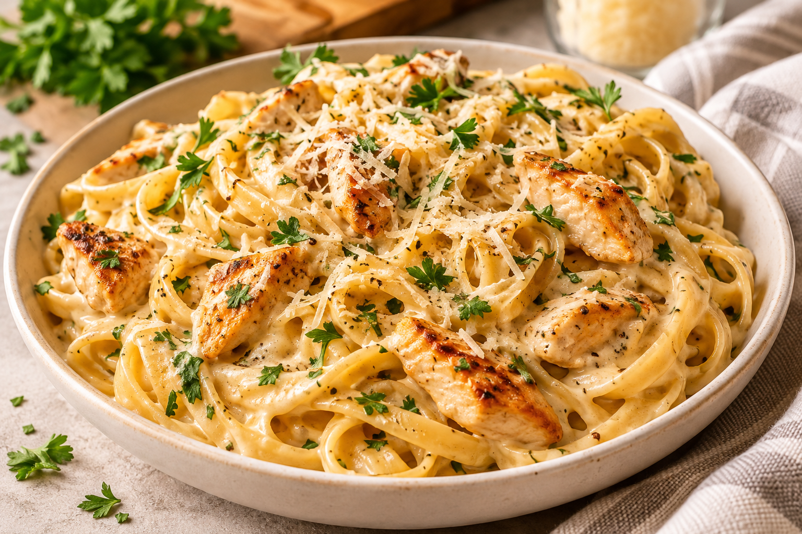

Creamy Garlic Chicken Pasta
Tender, golden chicken and pasta tossed in a silky garlic-Parmesan sauce. Made with simple grocery-store ingredients, this cozy dinner is ready in about 35 minutes.
A practical weeknight favorite. For the best results, cook the chicken to 165°F and keep the cream sauce at a gentle simmer.

A cozy dinner without a complicated ingredient list
This creamy chicken pasta is filling, family-friendly, and easy to adapt. Use your favorite pasta shape, add a handful of spinach, or serve it with a simple vegetable side to stretch the meal.
Ingredients
- 12 oz pasta (about ¾ of a 1 lb box)
- 1 lb boneless, skinless chicken breast, cut into bite-size pieces
- 1 tbsp olive oil
- 2 tbsp butter
- 3 garlic cloves, minced
- 1 cup heavy cream
- ½ cup finely grated Parmesan, plus extra to serve
- ½ tsp Italian seasoning
- ½ tsp salt, plus more to taste
- ¼ tsp black pepper
- 2–4 tbsp reserved pasta water, as needed
- 2 tbsp chopped parsley, optional
Ingredient note: freshly grated Parmesan melts more smoothly than pre-shredded cheese. If using salted butter, start with less added salt and adjust at the end.
Step-by-step directions
- Boil the pasta.
Bring a large pot of salted water to a boil. Cook pasta until just al dente, following the package timing. Before draining, reserve ½ cup of pasta water. - Season the chicken.
Pat the chicken pieces dry. Toss with Italian seasoning, salt, and black pepper so the seasoning coats the pieces evenly. - Cook until golden.
Heat olive oil in a large skillet over medium heat. Add chicken in a single layer and cook, turning occasionally, for about 6–8 minutes, depending on piece size. Check that the thickest pieces reach 165°F (74°C). Transfer to a clean plate. - Build the garlic sauce.
Lower the heat to medium-low. Add butter to the same skillet. Stir in minced garlic and cook for about 30 seconds, just until fragrant. Do not let it brown. - Make it creamy.
Pour in the heavy cream and warm gently for 2–3 minutes. Stir in the Parmesan gradually until melted and smooth. Keep the sauce below a boil so it stays creamy. - Bring everything together.
Add the drained pasta and cooked chicken. Toss until coated. Add reserved pasta water one tablespoon at a time if the sauce feels too thick. - Finish and serve.
Taste and adjust the salt and pepper. Sprinkle with parsley and extra Parmesan. Serve warm.
Simple ways to save
- Choose store-brand pasta and buy Parmesan in a block when it is on sale.
- Compare the unit price of family-pack chicken; freeze extra portions for another meal.
- Use ¾ cup cream plus ¼ cup milk if you want a slightly lighter sauce.
- Add frozen peas or spinach near the end for an easy vegetable boost.
- Serve with a seasonal vegetable or side salad to make the meal go further.
Grocery prices vary by location, store, and package size, so check your receipt before publishing a specific per-serving cost.
Storage, reheating & swaps
How to store leftovers
Refrigerate leftovers in a covered container within 2 hours of cooking and use within 3–4 days.
How to reheat
Warm gently in a skillet over low heat with a splash of milk or water, stirring until hot. The sauce thickens as it chills, so add liquid a little at a time.
Easy swaps
Use rotini, penne, or fettuccine. Boneless chicken thighs also work; cook until they reach 165°F. For extra vegetables, stir in spinach or peas before adding the pasta.
Creamy Garlic Chicken Pasta
Golden chicken, tender pasta, and a creamy garlic Parmesan sauce.
Ingredients
- 12 oz pasta
- 1 lb chicken breast, bite-size pieces
- 1 tbsp olive oil
- 2 tbsp butter
- 3 garlic cloves, minced
- 1 cup heavy cream
- ½ cup grated Parmesan
- ½ tsp Italian seasoning
- ½ tsp salt and ¼ tsp black pepper
- 2–4 tbsp reserved pasta water
- Parsley, optional
Quick method
- Cook pasta until al dente; reserve ½ cup pasta water.
- Season chicken and cook in olive oil until golden and 165°F inside. Set aside.
- Melt butter in the skillet; cook garlic for 30 seconds.
- Stir in cream, then Parmesan, over medium-low heat until smooth.
- Toss in pasta and chicken. Loosen with pasta water as needed.
- Season to taste, garnish, and serve.